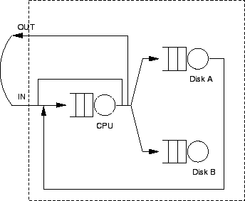

Next: ระบบเครือข่ายคิวแบบผสม:
Up: ระบบเครือข่ายคิวเปิด และระบบเครือข่ายคิวปิด
Previous: ระบบเครือข่ายคิวแบบเปิด:
Contents
Index
(Closed Queueing Networks) เป็นระบบที่ไม่มีงานเข้าหรือออกจากระบบ, แสดงในรูป 6.2, งานที่อยู่ในระบบจะทำงานวนอยู่ในระบบจากคิวหนึ่ง ไปยังอีกคิวหนึ่ง จำนวนงานทั้งหมดในระบบจะมีค่าคงที่ เราสามารถมองระบบเครือข่ายคิวแบบปิดว่าจุดต่อ ``Out'' จะถูกต่อย้อนเข้ากลับมาที่จุด ``In'' เมื่องานออกจากระบบจะต่อย้อนกลับเข้ามาในระบบทันที ในการวิเคราะห์ระบบเครือข่ายคิวแบบปิด เราต้องการทราบค่าอัตราความสำเร็จของคิวต่างๆ ในระบบ
Figure 6.2:
ระบบเครือข่ายคิวแบบปิด
|

|
Vara Varavithya
2002-03-09